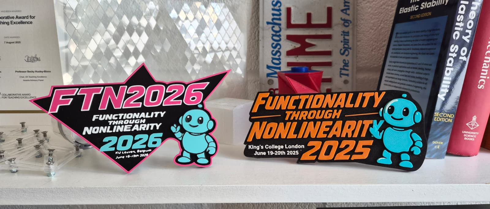
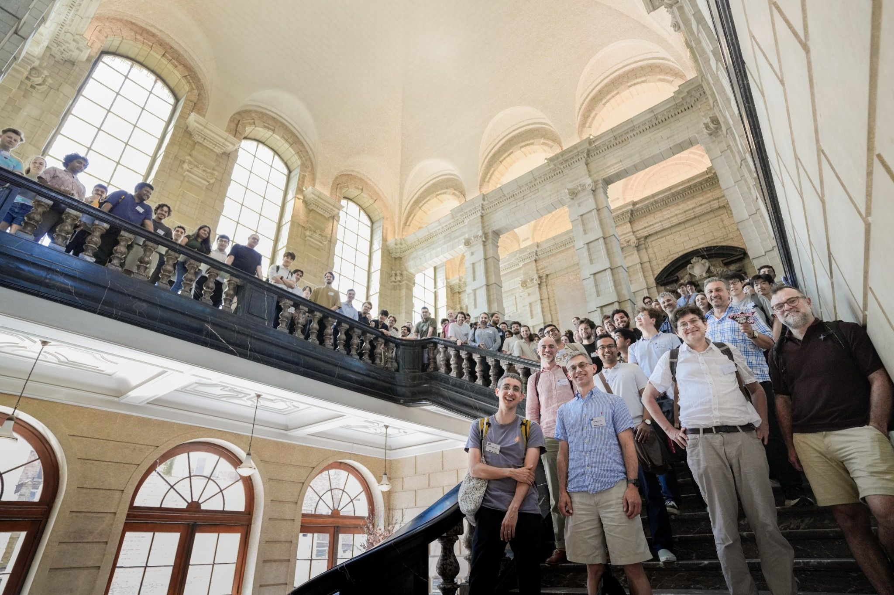
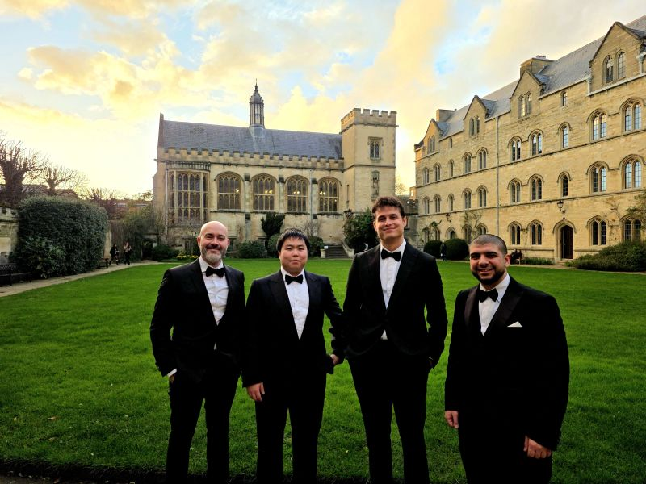

Everything that happens around the papers. Videos, press, and talks.
Videos
The Oxford researchers building 'brain-free' robotsMo, Ash, Yuxuan and Anto interviewed by the comms team at Pembroke Collegefilm · 2026Vacuum-Laser Fabrication of Programmable Soft ActuatorsAdvanced Science · 2026Multifunctional Fluidic Units for Emergent, Responsive Robotic BehaviorsAdvanced Materials · 2025Programmable granular entanglementmagnetic grains gripping tangle-prone objects · 2025Aerodynamic textiles that dimple on demandprogrammable surface dimpling · 2025Frequency Controlled Fluidic Oscillators for Soft RobotsAdvanced Science · 2024A worm-like robot moves by changing the friction between each segment of its body and the ground2022Inflatable Multistable Origami ActuatorAdvanced Functional Materials · 2022How Kirigami Turns Balloons into Shape-Shifting WondersAdvanced Materials · 2020
RADLab featured in ScienceVega: an interview with AshScienceVega · June 2026 · read ↗
Soft Robots Made Fast and CheapAsh and Anto talk soft robotics with ASMEASME · May 2026 · read ↗
Best Extended Abstract at IEEE RoboSoft 2026 — Yuxuan Wang, Michael Gomez & Antonio Forte, selected from over 220 submissionsIEEE RoboSoft · Kanazawa · April 2026
New ultra-low-cost technique could slash the price of soft roboticsAsh's work on TechXploreTechXplore · March 2026 · read ↗
New Fellows Welcomed to Pembroke — Prof. Forte, Tutorial Fellow in Engineering SciencePembroke College, Oxford · November 2025 · read ↗
Oxford Engineering researchers develop 'brain-free' robots that move in sync, powered entirely by airMo and Anto on University of Oxford NewsOxford Engineering Science · November 2025 · read ↗
The Need for Speed — textiles that dimple like a golf ballHarvard SEAS · October 2025 · read ↗
New academics at the Department of Engineering Science — Prof. Forte joins Oxford and Pembroke CollegeOxford Engineering Science · October 2025 · read ↗
Gripping Success with Both Hands — on programmable entanglement and The Weird Gripper CompanyAsh and Anto on spinning out The Weird Gripper Company!King's College London · September 2025 · read ↗
King's Engineering Team win national education excellence award (CATE)King's College London · August 2025 · read ↗
We do love nonlinear science! Stories from the front line of Functionality through Nonlinearity 2025Junke representing RADLab at FTN2025!King's College London · 2025 · read ↗
New breakthrough helps free up space for robots to 'think', say scientistsMo, Ash and Anto's fluidic oscillators in the newsKing's College London · 2024 · read ↗
Complex motions, simple actuatorsHarvard SEAS · 2024 · read ↗
From 2D to 3D: how to inflate shapesKing's College London · read ↗
Expanding Opportunities — Antonio Forte recognised at the NMES Education AwardsKing's College London · July 2023 · read ↗
Engineering students learn mechanics, robotics and controls by making space roversKing's College London · read ↗
Antonio Forte awarded a UKRI Future Leaders FellowshipKing's College London · 2023 · read ↗
Meet Dr Antonio ForteKing's College London · read ↗
Discovering unexplored dimensions in porous metamaterialsPhys.org · March 2022 · read ↗
Unexplored dimensions in porous metamaterialsHarvard SEAS · 2022 · read ↗
Machine learning for morphable materialsHarvard SEAS · 2022 · read ↗
Programmable balloons pave the way for new shape-morphing devicesHarvard SEAS · 2020 · read ↗
Talks, events, & news
MRC GapFund Awarded - with M. A. AlhnanUKRI4282 - Precision-Printed Hydrogels: Treating Oesophageal Strictures Through Engineered Expansion

Functionality Through Nonlinearity 2026FTN2026 was a blast! See you next year in Montreal (CA) for FTN2027! · conference ↗

The future of physical control: intelligence in mechanical matterinvited talk (Anto) · FTN2026 Conference, KU Leuven · June 2026 · conference ↗Mechanical Metamaterials: blurring the line between machines and matterDistinguished Lecture (Anto) · University of Southampton · May 2026
Nonlinear Physical Intelligence in Soft Machinesinvited talk (Anto) · RoboSoft 2026 workshop · Kanazawa, April 2026 · workshop site ↗

Engineering Subject Dinner at Pembroke College, Oxfordinvited talk (Anto) + dinner with the Gang. Amazing night :)Soft Robotics PhD Conferenceinvited talk (Anto) · KU Leuven · November 2024Bertoldi Applied Mechanics Seminarinvited talk (Anto) · Harvard University · October 2024
NILES2024 — IEEEkeynote (Anto) · Nile University · October 2024Hamlyn Symposiuminvited talk (Anto) · Imperial College London · June 2024AMOLF workshopinvited talk (Anto) · AMOLF, Amsterdam · May 2024OncoEng Conferencekeynote (Anto) · Imperial College London · January 20245th UK Robot Manipulation Workshopinvited talk (Anto) · University of Oxford · January 2024Solid Mechanics and Materials Engineering Seminarinvited talk (Anto) · University of Oxford · November 2023Lighten workshopinvited talk (Anto) · UCL · October 2023Shape Morphing Metamaterials Workshop, UKMMNinvited talk (Anto) · University of Bath · September 2023Automorph Workshopinvited talk (Anto) · Somerset House, London · June 2023Softlab Seminar Seriesinvited talk (Anto) · University of Bristol · June 2022Lighten workshopinvited talk (Anto) · UCL · May 2022SIAMM21keynote (Anto) · February 2021Department of Mechanical Engineering seminarinvited talk (Anto) · UCL · January 2021Department of Mechanical Engineering seminarinvited talk (Anto) · University of Warwick · October 2020MSE2020keynote (Anto) · September 2020EMI2020invited talk (Anto) · Columbia University · May 2020 (cancelled due to COVID)Department of Mechanical Engineering seminarinvited talk (Anto) · Boston University · March 2020Department of Bioengineering seminarinvited talk (Anto) · Imperial College London · February 2020Moss Lab Seminar Seriesinvited talk (Anto) · Boston University · January 2020